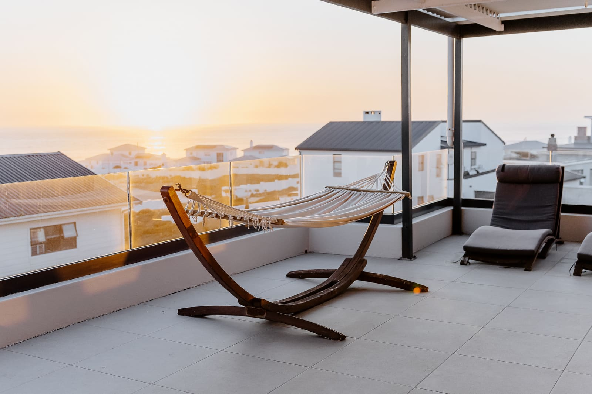
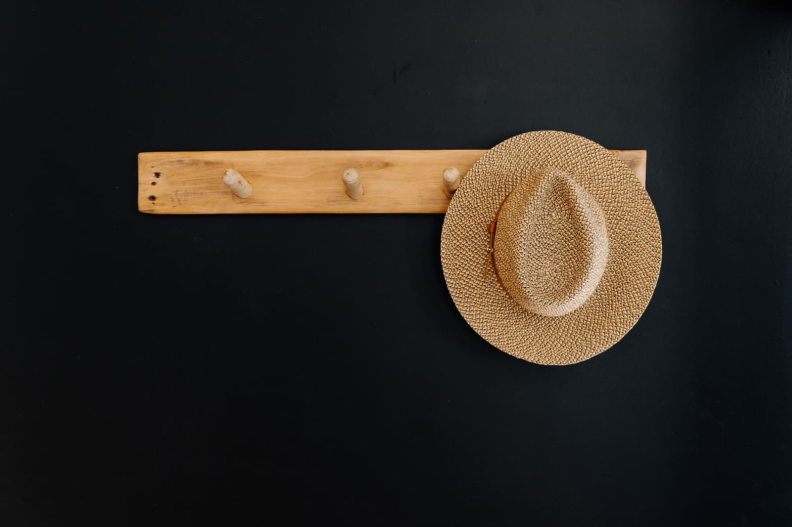

Holiday lets · 5 min read
Why detail photos book more nights
The small moments that help guests picture their stay.
Beach houses · Holiday homes · Coastal listings

Since 2016
Based in Cape Town
SDP Real Estate is the property side of Silver Dune Photography. I photograph beach houses, holiday homes and coastal listings with the same eye for light, detail and atmosphere I bring to weddings, so buyers and guests can feel what it's like to be there.
A coastal home is never just its floor plan. People fall for the light on the deck at sundowner time, the wetsuits drying by the outdoor shower, the fire pit glowing at dusk. My coastal property photography is planned around those moments: I look at which way the house faces, what time the light is best and which small details tell its story before I arrive.
The result is a set of images that works as hard on Property24, Private Property and Airbnb as it does in a brochure or on Instagram. Honest colour, straight lines, windows that still show the view, and the atmosphere that makes someone want to book or buy.


Book a single listing shoot or a full holiday-home story. Every shoot includes planning around the light, careful editing and a private online gallery with files sized for listing portals, print and social media.

Interiors and exteriors for homes on the market: bright, level and true to colour, with the view kept in every window.
Atmosphere is what books a beach house. Alongside every room, I photograph the details guests fall for: the outdoor shower, the fire pit, the hammock at sunset.
Exteriors timed for the soft light before sunset and the blue hour after it, when the house lights glow against the sky.
Wine by the fire, towels on the hook, a hat by the door. Small styled moments that turn a listing into a place someone wants to be.
Photography for the people who design, build and style coastal homes, licensed for websites, award entries and print.
Vertical crops and image sets sized for Instagram, Facebook and WhatsApp, delivered with the main gallery.
“I love that she catches the smallest little details and that she has a great talent for conveying the overall atmosphere.”AneneSilver Dune Photography client

I've photographed weddings and elopements as Silver Dune Photography since 2016, from West Coast beaches to the winelands. Reading light, noticing small details and waiting for the right moment are what make a wedding album feel alive. They do the same for a home.
SDP Real Estate brings that eye to beach houses, holiday homes and coastal listings. You work with me from the first message to the final gallery.
Visit Silver Dune PhotographyTell me about the home, who it's for and when it needs to go live. I'll reply with available dates and a fixed quote.
I check which way the house faces and plan the shoot around its best light, with golden hour saved for the exteriors.
Usually two to four hours. You'll get a short preparation checklist beforehand, and I style the small details on the day.
Edited images arrive in a private online gallery within 48 hours, ready for listings, print and social media.
Based in Cape Town, I photograph beach houses, holiday lets and family homes from the Atlantic Seaboard up the West Coast. Travel is included in every quote, and shoots further afield are welcome on request.
Holiday lets · 5 min read
The small moments that help guests picture their stay.

Preparation · 6 min read
A room-by-room checklist, from the braai area to the beds.

Technique · 4 min read
How orientation and season decide your hero image.
Every home is different, so each shoot is quoted on the property's size, the number of images and whether you'd like golden-hour or dusk exteriors. Send the address and you'll receive a fixed quote.
It depends on which way the home faces. Most West Coast and Atlantic Seaboard homes look out towards the sunset, so interiors are photographed in soft daylight and exteriors in the late afternoon and the blue hour after sunset.
Edited images are delivered in a private online gallery within 48 hours, sized for property portals, print and social media.
Yes. Holiday home shoots include every room plus lifestyle and detail images, such as the fire pit, the outdoor shower and the view at sunset, which help guests picture their stay.
You'll receive a short checklist before the shoot: clear counters, make the beds, switch on every light, open the blinds and move cars off the driveway. Small styling touches are taken care of on the day.
Cape Town and the Atlantic Seaboard, the Blouberg coast and the West Coast from Yzerfontein and Langebaan to Paternoster and St Helena Bay. Shoots further afield are welcome on request.

Tell me about the home and when it needs to go live. I'll reply with available dates, the best light for the property and a fixed quote.